I used a pwm value of 130/255 which is 0.509803921569 the max PWM/u I can give to my robot. I then drove my robot into the wall at a constant 130/255 about 1.8 meters away for 2 seconds as seen in the video below.
I then used sent the ToF readings over bluetooth and made the plot below. The yellow line roughly shows the steady state speed of 1.87096774194 meters per second. I got 1.87 m/s by taking the first and last point on the line and subtracting the distances and getting the difference in time and dividing the two as seen in my calculations.
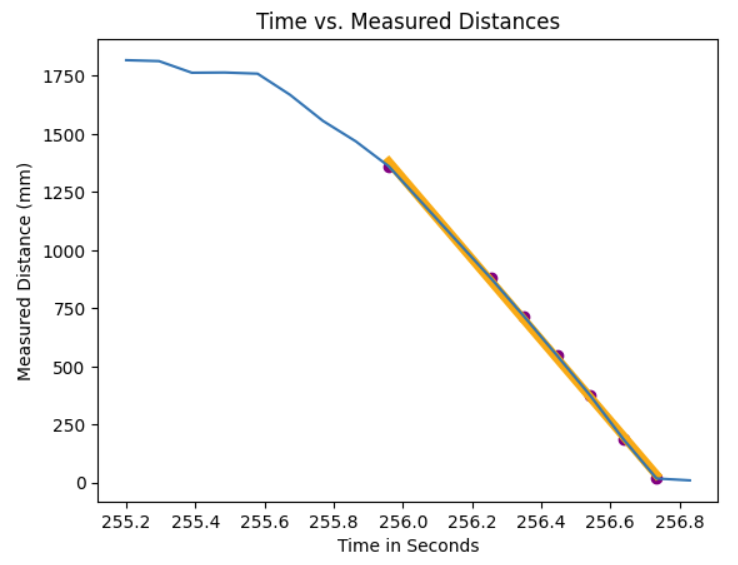
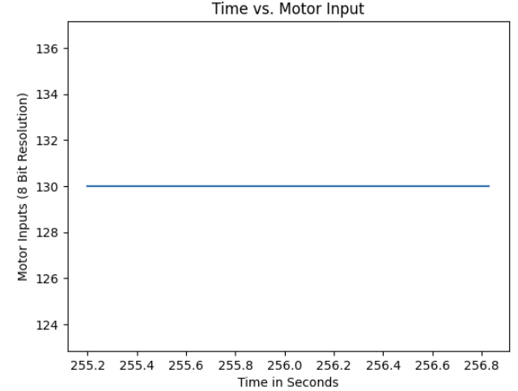
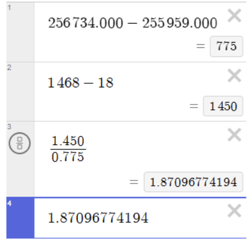
The yellow line shown in the graph below shows an estimate of the speed at 87.0340167753% of the steady state speed. I got that speed of 1.62837837838 m/s by getting the difference in distances between the two points of the line and then getting the difference in times between the two points and dividing them to get the speed of 1.62837837838 m/s, which took 1.055 seconds to get to. So my rise time was 1.055 seconds, and the speed at 90% rise time was 1.62837837838 m/s.
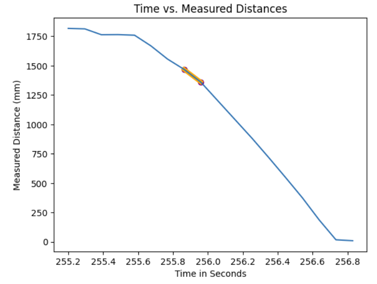
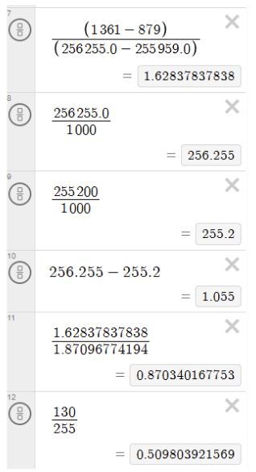
To get the d and m term I used the examples equations from lecture below.
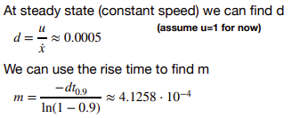
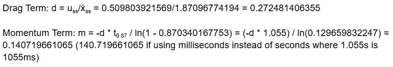
I then used the state space equations from lecture to get my A and B matrices. I made C [1 0] because the "position" values are positive distances from the wall directly from the ToF sensor.
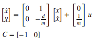
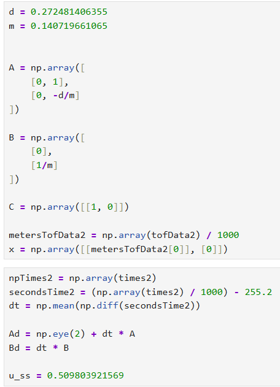
I then defined my process noise and sensor noises. I will discuss later the noises I ended up with.
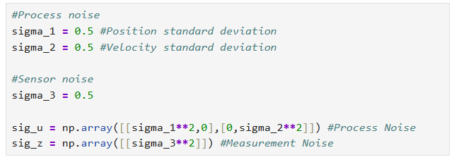
I implemented the Kalman Filter directly from the lab.
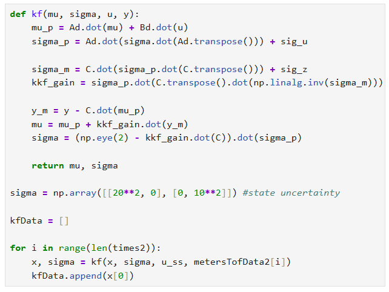
With my position, velocity, and sensor noise standard deviations set to 0.5 meters, I got the following data with the ToF data from me getting the steady state speed above.
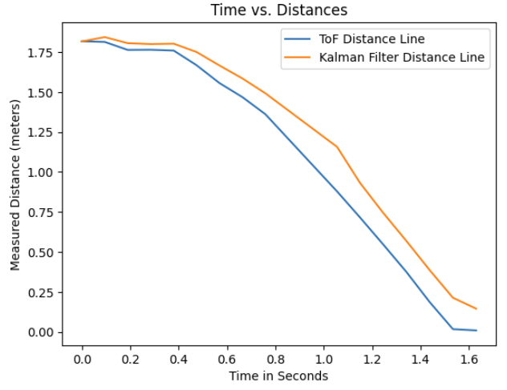
Bringing up the noise values for the position and velocity in my model uncertainty, I used 2.0 for both position and velocity standard deviations. This causes the Kalman Filter to trust the model less and focus more on the sensor data which got the line to basically be identical to the ToF data.
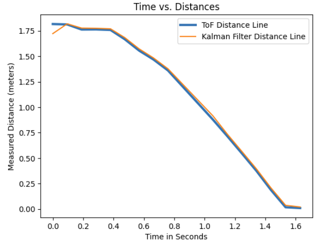
Increasing or decreasing state uncertainty only really changed the initial values for the Kalman Filter as I changed the values from sigma = np.array([[0.1**2, 0], [0, 0.1**2]]) to sigma = np.array([[20**2, 0], [0, 20**2]]) and got this:
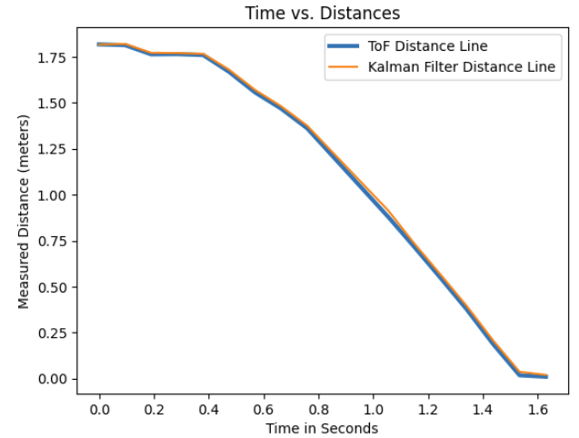
I just stuck with the larger values for state uncertainty to have a closer tracking Kalman Filter at the beginning.
I added more parameters for the bluetooth command so I could edit the noise values.
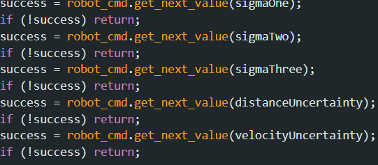
I then made my initial matrices.
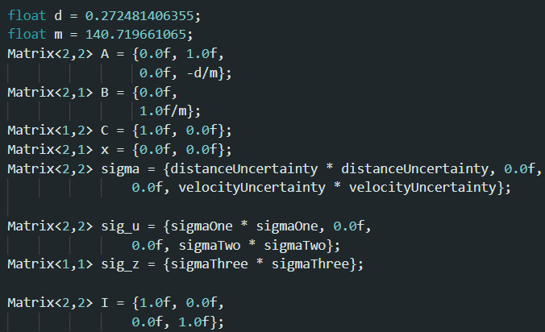
I then converted the KF Python code to C that can choose to use the measurement data (if there is new measurement data) to update the filter. If there is no measurement data from the ToF sensor ready, it will just skip the update step and rely solely on the model.
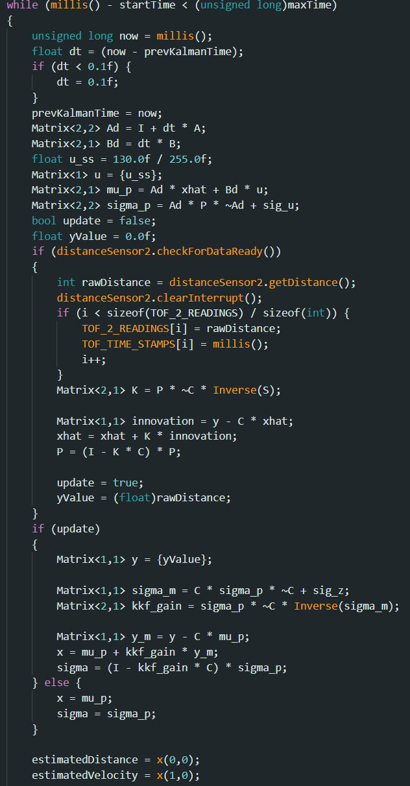
I switched back to using millimeters so I had to change my m term to 140.719661065, and I also had to use much larger variances for the noise. I ran this Kalman Filter PID code with 100 for the process noise variances, sensor noise variance, and state uncertainty and got the video and data below.
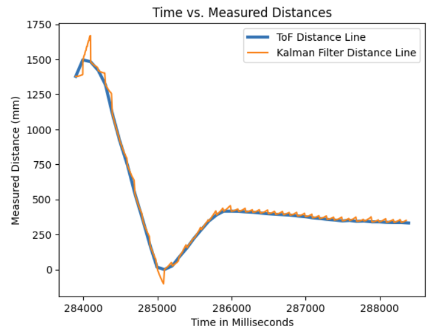
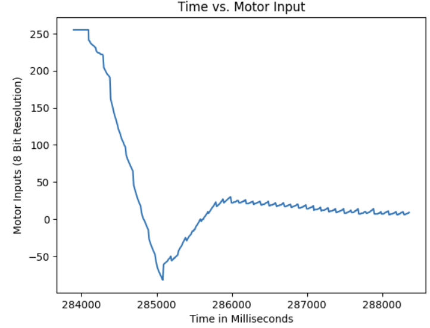
It performed quite well and tracked with the ToF line well, but it was quite jittery and it would fluctuate from low to high readings as seen by the spikiness when the robot slowed down in movement at the end.
I referenced Trevor Dales's website: https://trevordales.github.io/MAE4190/lab7/, for how to calculate the d and m terms, and also for implementing the Kalman Filter in Python. I also referenced the lecture slides for equations here: https://fastrobotscornell.github.io/FastRobots-2025/lectures/FastRobots2025_Lecture13_Observability.pdf